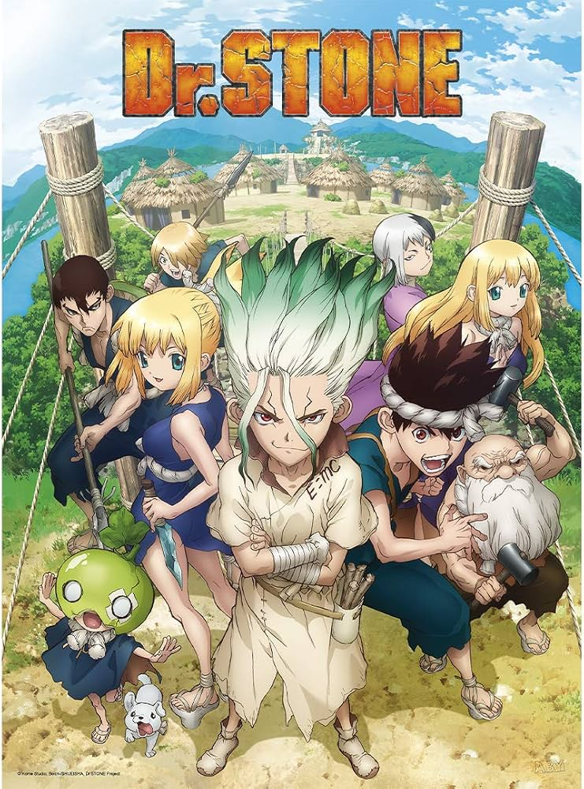
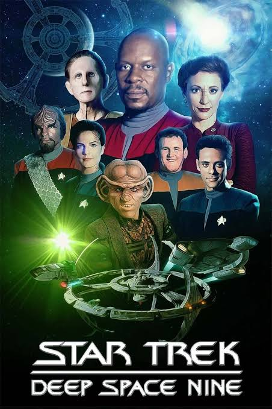
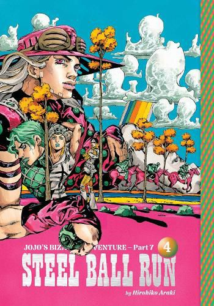
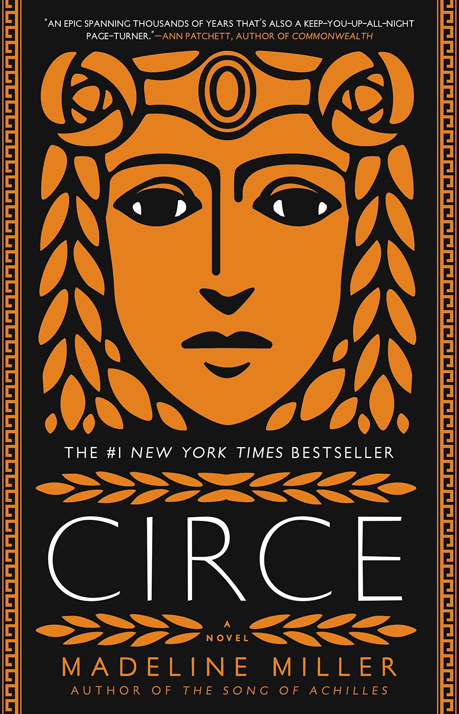

Here are some things I like:
Favourite Movie:
Favourite Game:
Favourite Anime:

Favourite Show:

Favourite Manga:

Favourite Book:

Here is some music for your enjoyment, if it isnt playing by default, click the play button



